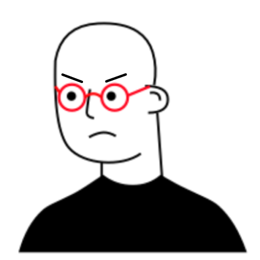

Course catalog
Filter and sort through all 12,000+ classes offered at Berkeley by requirements, grades, enrollment, and more.

"I spent hours finding the right class to take but found out there were no more open seats the moment I tried to enroll. Now I have to find an alternative and do my research all over again."
"Last year I had to create a backup to the backup of my ideal schedule because I knew enrollment would be unpredictable once it started."
"I got waitlisted in all of my classes. I literally had to drop all of them and enroll in random classes just to still be considered a student here."